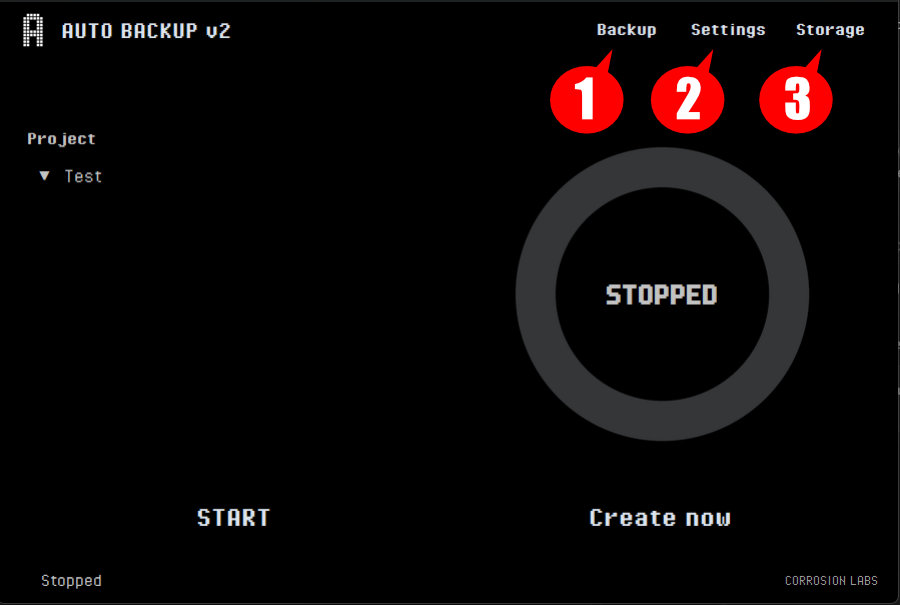
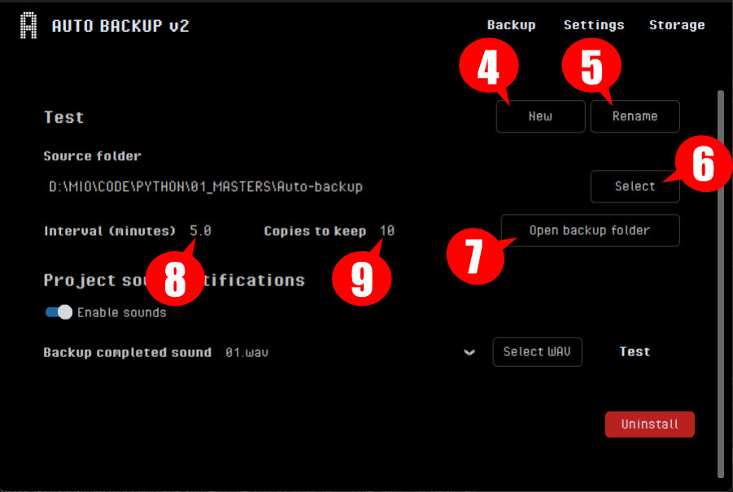
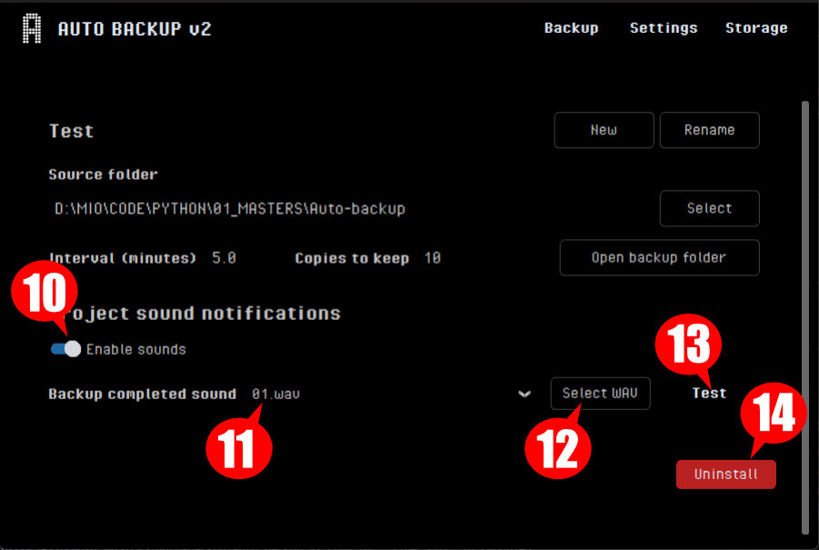
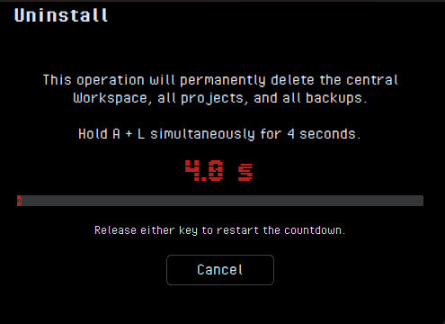
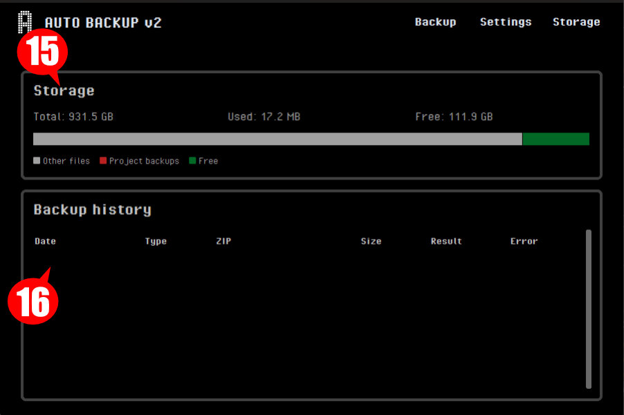
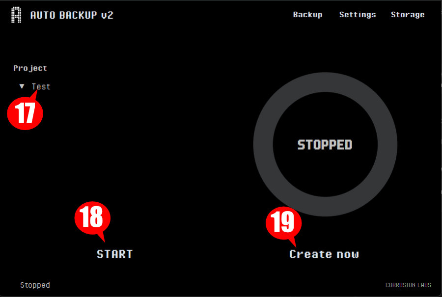
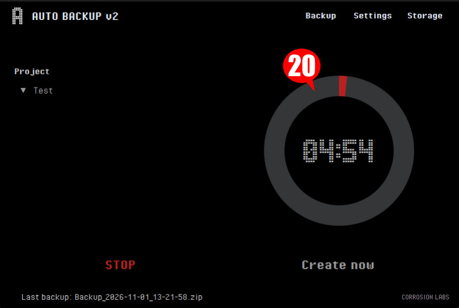

Auto Backup v2 crea copias de seguridad automáticas y manuales por proyecto. Este manual explica cómo configurar el espacio de trabajo, administrar proyectos, elegir notificaciones y consultar el almacenamiento disponible.
Configuración inicial
Al iniciar la aplicación por primera vez, indica la carpeta central donde se guardarán los backups. Todos los proyectos se almacenan dentro de esa ubicación, usando el nombre de cada proyecto, junto con su configuración.
Puedes ejecutar varias instancias de la aplicación siempre que cada una trabaje con un proyecto distinto.
Pantalla principal
La barra superior permite acceder a las tres áreas principales de Auto Backup v2.

- 1Backup. Inicia o detiene los backups automáticos y permite crear un backup manual.
- 2Settings. Gestiona proyectos, rutas de trabajo y notificaciones de audio.
- 3Storage. Muestra el espacio usado y el historial de backups realizados.
Proyectos
En Settings se configuran la carpeta de origen, el intervalo y el número de copias que se conservan para el proyecto seleccionado.

- 4New. Crea un proyecto nuevo.
- 5Rename. Cambia el nombre del proyecto seleccionado.
- 6Select. Elige la carpeta de la que se crearán los backups automáticos.
- 7Open backup folder. Abre la carpeta de backups en el Explorador de archivos.
- 8Interval. Define, en minutos, la frecuencia del backup automático.
- 9Copies to keep. Indica cuántas copias automáticas se guardan. Al alcanzar el límite, cada backup nuevo elimina el más antiguo.
Notificaciones y desinstalación
Configura el aviso sonoro que se reproducirá al completar un backup.

- 10Enable sounds. Activa o desactiva la notificación acústica al finalizar un backup.
- 11Backup completed sound. Permite elegir uno de los cinco sonidos incluidos o un sonido personalizado.
- 12Select WAV. Selecciona el archivo WAV que se desea reproducir.
- 13Test. Reproduce el sonido seleccionado para comprobarlo.
- 14Uninstall. Elimina el workspace central, todos los proyectos, sus backups y la configuración guardada.

Para completar la desinstalación, mantén pulsadas las teclas A + L al mismo tiempo durante cuatro segundos. Si sueltas cualquiera de las teclas, el contador se reinicia.
Almacenamiento
La sección Storage reúne el resumen del espacio disponible y el registro de backups.

- 15Storage. Muestra el espacio total, el usado por los backups del proyecto y el espacio libre del disco.
- 16Backup history. Registra la fecha, tipo, archivo ZIP, tamaño, resultado y posibles errores de cada backup.
Backups automáticos y manuales
Desde la pestaña Backup puedes seleccionar el proyecto activo, iniciar la programación automática o crear una copia manual en cualquier momento.

- 17Project. Selecciona uno de los proyectos creados y carga sus rutas y opciones guardadas.
- 18Start / Stop. Al iniciar, se crea un backup y comienza la cuenta atrás. Pulsa Stop para detener la programación.
- 19Create now. Crea un backup manual. Puedes añadir una descripción opcional al nombre del archivo y no interfiere con el temporizador.
Backup automático
NOMBRE_PROYECTO_AAAA-MM-DD_HH-MM-SS.zip
Se guarda en la carpeta Auto del proyecto.
Backup manual
NOMBRE_PROYECTO_AAAA-MM-DD_HH-MM-SS_COMENTARIO.zip
Se guarda en la carpeta Manual del proyecto.

- 20Temporizador. Durante la programación automática muestra el tiempo restante y el avance de la cuenta atrás.